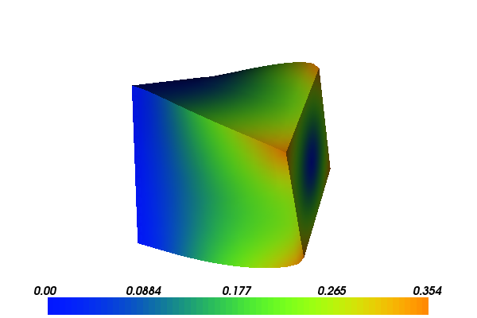

Hyperelasticity¶
This demo is implemented in a single Python file,
demo_hyperelasticity.py, which contains both the
variational forms and the solver.
Background¶
This example demonstrates the solution of a three-dimensional elasticity problem. In addition to illustrating how to use FunctionSpaces, Expressions and how to apply Dirichlet boundary conditions, it focuses on how to:
- Minimise a non-quadratic functional
- Use automatic computation of the directional derivative
- Solve a nonlinear variational problem
- Define compiled sub-domains
- Use specific form compiler optimization options
Equation and problem definition¶
By definition, boundary value problems for hyperelastic media can be expressed as minimisation problems, and the minimization approach is adopted in this example. For a domain \(\Omega \subset \mathbb{R}^{d}\), where \(d\) denotes the spatial dimension, the task is to find the displacement field \(u: \Omega \rightarrow \mathbb{R}^{d}\) that minimises the total potential energy \(\Pi\):
where \(V\) is a suitable function space that satisfies boundary conditions on \(u\). The total potential energy is given by
where \(\psi\) is the elastic stored energy density, \(B\) is a body force (per unit reference volume) and \(T\) is a traction force (per unit reference area).
At minimum points of \(\Pi\), the directional derivative of \(\Pi\) with respect to change in \(u\)
is equal to zero for all \(v \in V\):
To minimise the potential energy, a solution to the variational equation above is sought. Depending on the potential energy \(\psi\), \(L(u; v)\) can be nonlinear in \(u\). In such a case, the Jacobian of \(L\) is required in order to solve this problem using Newton’s method. The Jacobian of \(L\) is defined as
Elastic stored energy density¶
To define the elastic stored energy density, consider the deformation gradient \(F\)
the right Cauchy-Green tensor \(C\)
and the scalars \(J\) and \(I_{c}\)
This demo considers a common neo-Hookean stored energy model of the form
where \(\mu\) and \(\lambda\) are the Lame parameters. These can be expressed in terms of the more common Young’s modulus \(E\) and Poisson ratio \(\nu\) by:
Demo parameters¶
We consider a unit cube domain:
- \(\Omega = (0, 1) \times (0, 1) \times (0, 1)\) (unit cube)
We use the following definitions of the boundary and boundary conditions:
\(\Gamma_{D_{0}} = 0 \times (0, 1) \times (0, 1)\) (Dirichlet boundary)
\(\Gamma_{D_{1}} = 1 \times (0, 1) \times (0, 1)\) (Dirichlet boundary)
\(\Gamma_{N} = \partial \Omega \backslash \Gamma_{D}\) (Neumann boundary)
On \(\Gamma_{D_{0}}\): \(u = (0, 0, 0)\)
- On \(\Gamma_{D_{1}}\)
- \[\begin{split}u = (&0, \\ &(0.5 + (y - 0.5)\cos(\pi/3) - (z - 0.5)\sin(\pi/3) - y)/2, \\ &(0.5 + (y - 0.5)\sin(\pi/3) + (z - 0.5)\cos(\pi/3) - z))/2)\end{split}\]
On \(\Gamma_{N}\): \(T = (0.1, 0, 0)\)
These are the body forces and material parameters used:
- \(B = (0, -0.5, 0)\)
- \(E = 10.0\)
- \(\nu = 0.3\)
With the above input the solution for \(u\) will look as follows:
{kind=link}
{kind=link}
Implementation¶
This demo is implemented in the demo_hyperelasticity.py
file.
First, the required modules are imported:
import matplotlib.pyplot as plt
from dolfin import *
The behavior of the form compiler FFC can be adjusted by prescribing various parameters. Here, we want to use the UFLACS backend of FFC:
# Optimization options for the form compiler
parameters["form_compiler"]["cpp_optimize"] = True
parameters["form_compiler"]["representation"] = "uflacs"
The first line tells the form compiler to use C++ compiler optimizations when compiling the generated code. The remainder is a dictionary of options which will be passed to the form compiler. It lists the optimizations strategies that we wish the form compiler to use when generating code.
First, we need a tetrahedral mesh of the domain and a function space on this mesh. Here, we choose to create a unit cube mesh with 25 ( = 24 + 1) vertices in one direction and 17 ( = 16 + 1) vertices in the other two direction. On this mesh, we define a function space of continuous piecewise linear vector polynomials (a Lagrange vector element space):
# Create mesh and define function space
mesh = UnitCubeMesh(24, 16, 16)
V = VectorFunctionSpace(mesh, "Lagrange", 1)
Note that VectorFunctionSpace creates a
function space of vector fields. The dimension of the vector field
(the number of components) is assumed to be the same as the spatial
dimension, unless otherwise specified.
The portions of the boundary on which Dirichlet boundary conditions will be applied are now defined:
# Mark boundary subdomians
left = CompiledSubDomain("near(x[0], side) && on_boundary", side = 0.0)
right = CompiledSubDomain("near(x[0], side) && on_boundary", side = 1.0)
The boundary subdomain left corresponds to the part of the
boundary on which \(x=0\) and the boundary subdomain right
corresponds to the part of the boundary on which \(x=1\). Note
that C++ syntax is used in the CompiledSubDomain()
<dolfin.compilemodules.subdomains.CompiledSubDomain>` function since
the function will be automatically compiled into C++ code for
efficiency. The (built-in) variable on_boundary is true for points
on the boundary of a domain, and false otherwise.
The Dirichlet boundary values are defined using compiled expressions:
# Define Dirichlet boundary (x = 0 or x = 1)
c = Constant((0.0, 0.0, 0.0))
r = Expression(("scale*0.0",
"scale*(y0 + (x[1] - y0)*cos(theta) - (x[2] - z0)*sin(theta) - x[1])",
"scale*(z0 + (x[1] - y0)*sin(theta) + (x[2] - z0)*cos(theta) - x[2])"),
scale = 0.5, y0 = 0.5, z0 = 0.5, theta = pi/3, degree=2)
Note the use of setting named parameters in the Expression for r.
The boundary subdomains and the boundary condition expressions are
collected together in two DirichletBC objects, one for each part of the
Dirichlet boundary:
bcl = DirichletBC(V, c, left)
bcr = DirichletBC(V, r, right)
bcs = [bcl, bcr]
The Dirichlet (essential) boundary conditions are constraints on the
function space \(V\). The function space is therefore required as
an argument to DirichletBC.
Trial and test functions, and the most recent approximate displacement
u are defined on the finite element space V, and two objects
of type Constant are
declared for the body force (B) and traction (T) terms:
# Define functions
du = TrialFunction(V) # Incremental displacement
v = TestFunction(V) # Test function
u = Function(V) # Displacement from previous iteration
B = Constant((0.0, -0.5, 0.0)) # Body force per unit volume
T = Constant((0.1, 0.0, 0.0)) # Traction force on the boundary
In place of Constant,
it is also possible to use as_vector, e.g. B = as_vector( [0.0,
-0.5, 0.0] ). The advantage of Constant is that its values can be
changed without requiring re-generation and re-compilation of C++
code. On the other hand, using as_vector can eliminate some
function calls during assembly.
With the functions defined, the kinematic quantities involved in the model are defined using UFL syntax:
# Kinematics
d = len(u)
I = Identity(d) # Identity tensor
F = I + grad(u) # Deformation gradient
C = F.T*F # Right Cauchy-Green tensor
# Invariants of deformation tensors
Ic = tr(C)
J = det(F)
Next, the material parameters are set and the strain energy density and the total potential energy are defined, again using UFL syntax:
# Elasticity parameters
E, nu = 10.0, 0.3
mu, lmbda = Constant(E/(2*(1 + nu))), Constant(E*nu/((1 + nu)*(1 - 2*nu)))
# Stored strain energy density (compressible neo-Hookean model)
psi = (mu/2)*(Ic - 3) - mu*ln(J) + (lmbda/2)*(ln(J))**2
# Total potential energy
Pi = psi*dx - dot(B, u)*dx - dot(T, u)*ds
Just as for the body force and traction vectors, Constant has been used for the model
parameters mu and lmbda to avoid re-generation of C++ code
when changing model parameters. Note that lambda is a reserved
keyword in Python, hence the misspelling lmbda.
Directional derivatives are now computed of \(\Pi\) and \(L\) (see (1) and (2)):
# Compute first variation of Pi (directional derivative about u in the direction of v)
F = derivative(Pi, u, v)
# Compute Jacobian of F
J = derivative(F, u, du)
The complete variational problem can now be solved by a single call to
solve:
# Solve variational problem
solve(F == 0, u, bcs, J=J)
Finally, the solution u is saved to a file named
displacement.pvd in VTK format, and the deformed mesh is plotted
to the screen:
# Save solution in VTK format
file = File("displacement.pvd");
file << u;
# Plot solution
plot(u)
plt.show()